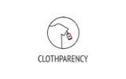

I’m Jonas Brinkhoff, a 25-year-old UI/UX designer and Web Developer from Germany, currently based inHamburg, Amsterdam, Paris, anywhere.
About
My journey began by building websites for local companies and start-ups as a freelancer. With the Bachelor’s degree in my pockets, I explored the exciting world of digital agencies and high-profile clients as UX Designer at MediaMonks.
After returning to freelancing and living as a digital nomad for over a year, I decided to change the direction of my career. I moved to Paris and enrolled in the Design for Social Impact master's program at the Paris College of Art. Throughout this program, I've learned how to design and launch products that solve social and environmental problems in a financially sustainable way.
Right now, I’m looking for a job in a purpose-driven organization anywhere in the world. Please don't hesitate to reach out!
Experience
Freelance - UI/UX Designer & Web Developer
October 2017 - Present
MediaMonks - UX Designer
February 2017 - September 2017
Freelance - Web Designer & Developer
November 2014 - February 2017
Education
M.A. Design for Social Impact
Paris College of Art, France
2018 - 2019
B.Sc. Human-Computer Interaction
University of Hamburg, Germany
2012 - 2016
Clients I’ve Worked For
While I was working at MediaMonks, I worked on a website for Google Zoo. As the only UX Designer on the project, I was responsible for creating the wireframes as well as an interactive prototype.
While I was working at MediaMonks, I worked on the user experience of a large-scale e-commerce project for Adidas.
While I was working at MediaMonks, I worked on the Heineken - The Sub e-commerce platform. I was responsible for improving the user flow and creating new wireframes.
Jumbo is one of the largest supermarkets in the Netherlands. I've conducted several in-house and field usability tests for their app while I was working at MediaMonks.
While I was working at MediaMonks, I worked on the information architecture and wireframes of the new Spectrum Reach website.
I was hired by easymarketing to join their product team on a freelance basis to improve the UX and UI design of AgencyOS (a Google Ad Word Manager for Agencies).

I helped Clothparency to redesign the rating system of their ethical clothing app.
I was hired by Matchmetrics to design several features for their products ScoutPad and Scoutpanel. Furthermore, I've designed and developed the landing page for ScoutPad.
I was hired by Dunckelfeld to support their team in developing the new website for the Transformative Urban Mobility Initiative (TUMI).
As part of Dunckelfeld's team, I developed the front- and back-end for the website of Transformative Urban Mobility Initiative (TUMI)
Services
As a full-stack designer, I can single-handedly transform your ideas into reality. My services include conducting user research, defining the user experience, designing pixel-perfect interfaces for web and mobile, and developing fast and stable code.
My experience ranges from working with emerging start-ups, local businesses, to fortune 500 companies. I've been part of several distributed and in-house teams, but I can also bring projects to life completely on my own.